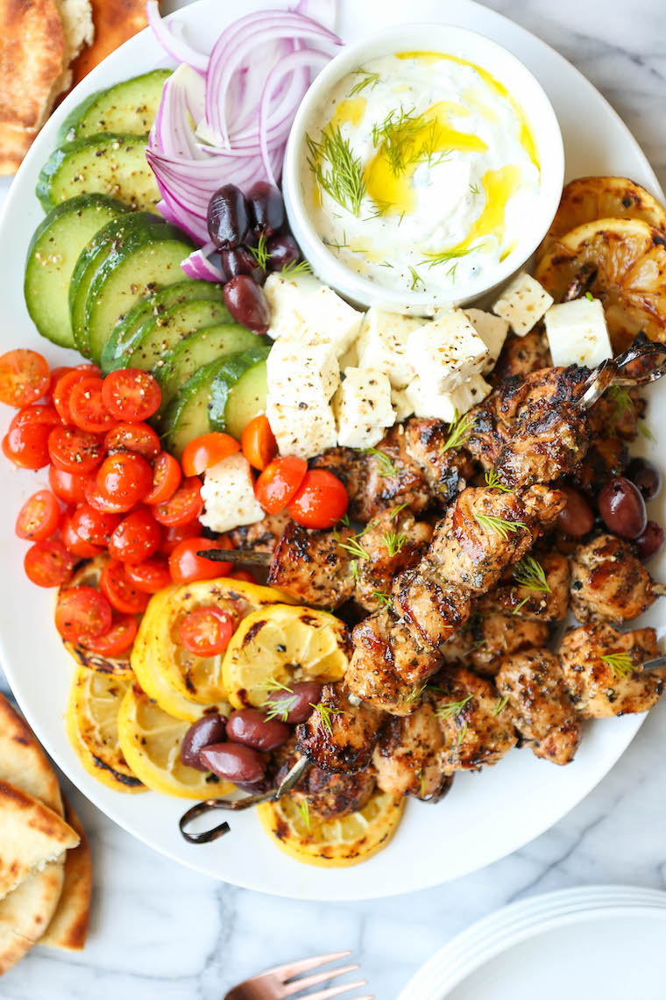

Greek Chicken Kabobs

Description
Super juicy, tender kabobs made with the best marinade ever! Olive oil, lemon juice, paprika, oregano, basil, thyme, garlic. SO BOMB.
source: https://damndelicious.net/2019/08/28/greek-chicken-kabobs/
Ingredients
- 4 tablespoons olive oil, divided
- 2 tablespoons freshly squeezed lemon juice
- 1 tablespoon lemon zest
- 1 teaspoon paprika
- 2 teaspoons dried oregano
- 2 teaspoons dried basil
- 1 teaspoon dried thyme
- 3 cloves garlic, minced
- 1 shallot, minced
- Kosher salt and freshly ground black pepper, to taste
- 2 pounds boneless, skinless chicken thighs, cut into 1-inch chunks
Directions
- In a medium bowl, combine 2 tablespoons olive oil, lemon juice, lemon zest, paprika, oregano, basil, thyme, garlic, shallot, 1 1/4 teaspoons salt and 1 1/4 teaspoons pepper.
- Stir in chicken until well combined; marinate for at least 2 hours to overnight, turning occasionally. Drain the chicken from the marinade.
- Thread chicken onto skewers. Brush with remaining 2 tablespoons olive oil; season with salt and pepper, to taste.
- Preheat grill to medium heat.
- Add skewers to grill, and cook, turning occasionally, until the chicken is completely cooked through, reaching an internal temperature of 165 degrees F, about 10 minutes.
- Serve immediately.